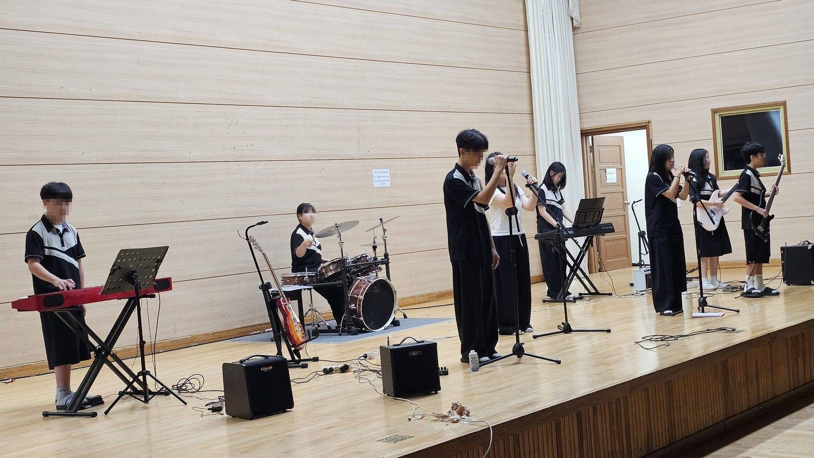
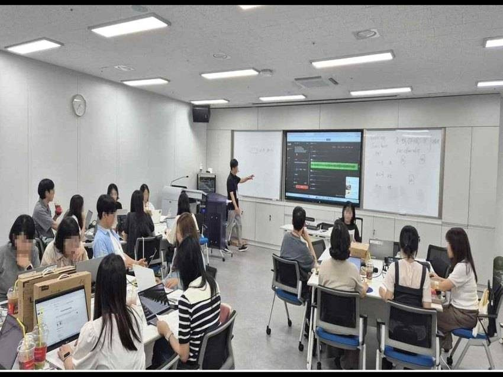
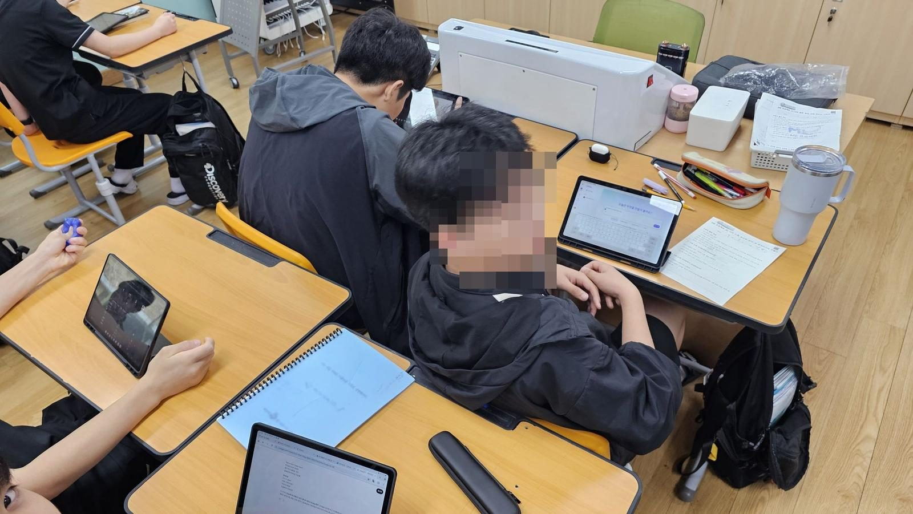

①역할 정하기
“너는 ○○ 장르 전문 작사가야”
AI에게 맡길 작사가의 얼굴부터 정한다. 장르가 바뀌면 낱말과 문장의 호흡도 달라진다.
남는 기록 : 학생 프롬프트
2026. 학교예술교육 실천사례 연구대회

시나브로 프로젝트
시나브로 — 모르는 사이에 조금씩, 그러나 분명히 자란다

THE OVERVIEW
연구의 전체 흐름이 연구는 노래 만들기를 어려워하던 중학생들이 자기 이야기를 담은 노래를 짓고 친구들 앞에 내놓기까지의 과정을 담았다. 시를 읽으며 생각을 정리하고, 가사를 쓰고, AI로 곡을 만들어 고치고, 완성한 노래를 나누는 네 단계를 차례로 밟도록 수업을 짰다. 그 결과 처음에 가장 자신 없어 하던 창작 영역이 가장 많이 성장했다.
사전 설문을 해 보니, 자기 생각과 감정을 가사로 표현할 자신이 있다는 학생은 11.5%에 그쳤다. 반면 친구의 작품을 듣고 응원하는 일에는 자신 있다는 학생이 가장 많았다. AI로 노래를 만들게 해도 처음 나온 곡을 그대로 내는 경우가 많았다.

작은 활동을 차례로 쌓아 가기로 했다. 시에서 하고 싶은 말을 찾고, 그 말을 가사로 옮기고, AI로 곡을 만들어 고친 뒤, 완성한 노래를 교내에 들려주는 순서이다. 2학기에는 이를 모둠 뮤지컬로 넓혔다. 이 과정에서 창작 자신감이 생기는지, AI를 다루는 힘과 음악 이해가 같이 느는지, 다른 학교에서도 할 수 있는지 살폈다.
| 실천 과제 | 무엇을 하는가? | 어떤 장벽을 넘는가? | 핵심 활동 |
|---|---|---|---|
| 詩 | 시의 품에 안기다 메시지를 만나다 | 창작 이전의 문제 말할 내용이 없다 | ☞ 계기교육 메시지를 시의 언어로 (연간 8주제) ☞ 「진달래꽃」 × 서양음악사 20개 양식 비교 감상 |
| 나 | 나를 노래하다 나의 장면을 찾다 | 장벽 ① 표현 M 2.31 · 11.5% | ☞ RUPA 4단계 · 감정 태그 · 30초 소개 ☞ 「음악적 장치 분석표」 → 절·후렴 가사 쓰기 |
| 브 | 브레인 AI와 협력하다 AI를 다스려 빚다 | 장벽 ② 검증 M 2.78 · 24.5% | ☞ 프롬프트 4칸 카드 · 두 버전 비교 생성 ☞ 선택 이유를 음악 용어로 기록 → 수정 이력 평가 |
| 로 | 세상에 로그인하다 실제 청중과 나누다 | 장벽 ③ 연결 M 2.73 · 21.9% | ☞ 리릭 비디오 · 소축제 · 방송 · 급식실 QR · 버스킹 ☞ 음악 산업 12개 분야 진로 탐구 · 모둠 뮤지컬 |
| 확산 | 연구회로 로그인하다 동료와 함께 | 한 교실에서 끝나지 않도록 | DFMR 연구회 · 정기 협의회 · 교사 연수 · 도단위 공개수업(실시 1·예정 1) |
학생들은 먼저 「진달래꽃」을 스무 가지 시대 음악으로 바꿔 들으며 음악에 따라 느낌이 달라지는 것을 확인했다. 이어 좋아하는 곡을 분석하고 자기 경험을 가사로 썼다. AI로 곡을 만들 때는 네 칸 질문 카드를 썼는데, 등굣길 이야기를 쓴 한 학생은 1절과 후렴이 비슷하게 들리자 분석 내용을 바탕으로 후렴에 악기를 더해 두 곡을 비교한 뒤 하나를 골랐다. 평가는 이렇게 고친 과정을 중심으로 했고, 완성한 노래는 영상으로 만들어 교내에 들려주었다.
사후 설문에서 다섯 개 영역이 모두 통계적으로 의미 있게 올랐다. 특히 처음에 가장 낮았던 창작 영역이 가장 많이 올랐고(d=0.70), AI 활용과 음악 분석 능력도 함께 좋아졌다(각 d=0.50).
이 수업은 특정 AI 프로그램의 사용법보다 활동 순서를 중심으로 만들었다. 그래서 질문 카드, 단계별 활동지, 평가표는 도구가 바뀌어도 그대로 쓸 수 있고, 자체 제작한 웹 플랫폼 3종도 설정만 조금 바꾸면 아이모두 계정으로 다른 학교에서 쓸 수 있다. 앞으로는 학생들이 플랫폼에서 만든 뮤지컬을 실제 공연으로 이어 가려 한다.
서버 재개발·별도 사용자 명부 작성 부담 감소
계정·운영 환경을 공유하는 기반
→ 지역 단위 일반화의 기반

THE QUESTION
무엇을 남기는 음악 수업인가AI가 30초 만에 노래를 만드는 시대, 그 노래 속에 학생은 있는가?
중학교 음악시간에 “자신의 이야기로 노래를 만들어 보자”고 말하면 교실은 금세 조용해진다. 고개를 숙이는 학생도, “저는 그런 거 못해요” 하며 손을 내젓는 학생도 있다. 중학교 3학년 192명에게 10문항의 사전 진단을 하자 가장 낮은 문항은 내 생각과 감정을 노래 가사로 쓸 수 있느냐는 물음이었다(평균 2.31점, 긍정 11.5%). 열 명 중 아홉이 스스로를 ‘노래를 못 만드는 사람’으로 여기고 있었다.1
주 15점 척도 10문항 가운데 평균 3.0을 넘긴 문항은 셋뿐이었다. 가장 높은 문항은 친구의 작품을 편견 없이 듣고 격려한다는 물음(평균 3.27점, 긍정 44.8%)으로, 창작 문항과 뚜렷하게 대비되었다.
| 구분 | 학생 응답 | 교실에서 마주한 장면 | 평균 점수 | 긍정 비율 |
|---|---|---|---|---|
| 장벽 ① | 저는 노래 못 만들어요 | 악기를 잘 다뤄야 곡을 쓴다고 믿음. 창작은 재능 있는 몇몇의 몫으로 여김 | 2.31 | 11.5% |
| 장벽 ② | AI가 준 대로 낼게요 | 처음 나온 곡을 그대로 냄. 노래 속에 ‘나’가 없음. | 2.78 | 24.5% |
| 장벽 ③ | 음악은 제 일이 아니에요 | 음악으로 누군가와 이어져 본 경험이 적고, 진로 탐색은 듣기에 그침 | 2.73 | 21.9% |
노래 앞을 가로막은 세 개의 장벽
학생과 ‘자기 노래’ 사이에는 표현·검증·연결이라는 세 겹의 장벽이 있었다.
시나브로 — 모르는 사이에 조금씩, 그러나 분명히 자란다
성장은 한 번의 무대가 아니라 작은 시도가 쌓이는 동안 일어난다. 그래서 ‘시나브로’ 네 글자를 네 개의 장(章)으로 삼았다. 할 말이 있어야 노래하고, 노래가 있어야 다듬으며, 다듬은 노래라야 세상과 나눌 수 있다.
| 실천 과제 | 어떤 장면인가? | 어떤 벽을 넘는가? | 핵심 활동 |
|---|---|---|---|
| 詩 | 시의 품에 안기다 할 말을 찾다 | 노래 이전의 벽 할 말이 없다 | 계기교육 메시지를 시의 언어로 (연간 8주제) 「진달래꽃」 × 서양음악사 20개 양식 비교 감상 |
| 나 | 나를 노래하다 내 목소리를 내다 | 장벽 ① 표현 M 2.31 · 11.5% | RUPA 4단계 · 감정 태그 · 30초 소개 「음악적 장치 분석표」 → 절·후렴 가사 쓰기 |
| 브 | 브레인 AI와 협력하다 AI와 함께 다듬다 | 장벽 ② 검증 M 2.78 · 24.5% | 프롬프트 4칸 카드 · 2종 생성 비교 선택 이유를 음악 용어로 기록 → 수정 이력 평가 |
| 로 | 세상에 로그인하다 실제 청중과 나누다 | 장벽 ③ 연결 M 2.73 · 21.9% | 리릭 비디오 · 소축제 · 방송 · 급식실 QR · 버스킹 음악 산업 12개 분야 진로 탐구 · 모둠 뮤지컬 |
| 확산 | 연구회로 로그인하다 다른 교실로 | 한 교실에서 끝나지 않도록 | DFMR 연구회 운영 · 정기 협의회 · 자체 연수 · 도단위 공개수업 1회 실시, 1회 예정 |
| 글자 | 읽는 법 | 이 연구에서의 뜻 | 학생에게 남는 것(산출물) |
|---|---|---|---|
| 詩 | 시 | 계기교육의 메시지와 한 편의 시를 음악으로 만나는 단계. 「진달래꽃」 한 편이 20개 양식으로 바뀌어 들리는 경험이 “같은 말인데 왜 다르게 들리지?”라는 질문을 만든다. | 감상 활동지 · 주제 슬로건 서양음악사 비교 감상 기록 |
| 나 | 나 | 자기 이야기를 창작의 재료로 길어 올리는 단계. 나를 닮은 음악을 고르고, 그 곡의 빠르기·조성·악기 편성을 분석표에 적어 두었다가 가사로 옮긴다. | 활동지 · 감정 태그 「음악적 장치 분석표」 · 가사 |
| 브 | 브레인 AI (Brain AI) | AI를 도구가 아니라 협력자로 다루는 단계. 프롬프트를 네 칸으로 나눠 쓰고, 최소 2종을 만들어 비교한 뒤 고른 이유를 음악 용어로 쓴다. 평가는 수정 이력을 본다. | 프롬프트 원본·수정본 음원 2종 · 선택 근거 진술 |
| 로 | 로그인 (Log in) | 만든 것을 실제 청중에게 접속시키는 단계. 학생은 소축제·방송·QR로 세상에 접속하고, 교사는 연구회로 접속한다. 로그인은 두 방향으로 일어난다. | 리릭 비디오 · 공개 무대 기록 분야 조사 활동지 · 연구회 자료 |
| 시나브로 | 네 단계를 여러 계기교육 주제로 반복하는 동안 서서히 일어나는 성장. 한 번의 완성작이 아니라 반복된 시도의 누적을 성과로 본다. | ||
| 도구·개념 | 무엇인가 | 왜 만들었나 |
|---|---|---|
| 프롬프트 4단계 카드 | ① 역할 주기 ② 상황과 쓰지 말 것(금지어) ③ 음악 장치 지정 ④ 2종 만들어 비교·선택 | 결과가 마음에 들지 않을 때 어느 칸을 고쳐야 하는지 보이게 하기 위해 |
| 음악적 장치 분석표 | 감상한 곡의 빠르기·조성·악기 편성·절과 후렴의 짜임새 차이를 적는 표 | 감상의 기록이 곧 AI에게 내릴 명령의 재료가 되도록 |
| 수정 이력 | 프롬프트 원본·수정본, 2종 이상의 생성 이력, 선택 근거 진술의 묶음 | “이 결과물이 정말 이 학생의 것인가”에 답하는 유일한 증거이므로 |
| RUPA 4단계 | Response 반응 → Understand 이해 → Practice 표현 → Assessment 성찰 | 자기 이야기가 노래가 되는 경로를 악보 없이 네 걸음으로 나누려고 |
세 개의 벽 앞에서, 이 이야기는 다음 세 가지 물음으로 출발하였다.
| 연구 문제 ① | 악기를 몰라도 들어서는 창작의 문을 열면, 가장 낮던 창작 자신감이 자랄까? |
|---|---|
| 가설 ① | 측정한 다섯 영역 가운데 창작 역량이 가장 크게 오를 것이다. |
| 연구 문제 ② | 두 곡을 비교해 하나를 고르고 그 이유를 음악 용어로 말하면, AI 활용과 음악 이해가 함께 자랄까? |
| 가설 ② | ‘AI 도구의 주도적 활용’과 ‘음악 분석·감상의 깊이’가 나란히 오를 것이다. |
| 연구 문제 ③ | 동료 교사와 나누면, 이 수업이 다른 교실에서도 다시 살아날까? |
| 가설 ③ | 가입도 설치도 필요 없는 형식으로 나눈다면 가능할 것이다. |

THE DESIGN
질문에서 수업의 구조로| 영역 | 선행 연구 | 시나브로에 옮긴 것 |
|---|---|---|
| 스마트교육 에듀테크 활용 | ▸ 도구마다 길러 줄 역량을 짝지어 설계 ▸ 네 과제의 흐름을 한 장의 표로 꿰어 보인다 | ▸ 긍정 비율에 더해 t-검정·효과 크기로 변화의 크기를 밝힌다 |
| 음악과 창작수업 | ▸ 창작을 단계로 나눈 모형과 과정 루브릭 ▸ 완성곡보다 고쳐 가는 과정을 배움으로 본다 | ▸ 악기 실력과 상관없는 창작의 문을 열어 모두가 참여 |
| 생성형 AI 활용수업 | ▸ 음악 생성 AI를 품은 창작 차시 설계 ▸ 한정된 차시 안에서도 완성된 곡을 손에 쥔다 | ▸ 거듭 고치는 단계를 두고 수정 기록을 평가의 근거로 삼는다 |
| 진로연계 교과수업 | ▸ 교과 내용과 진로를 한 주제로 엮어 재구성 ▸ 배움이 일의 세계와 맞닿는 지점을 보여 준다 | ▸ 3학년 전원이 음악 산업 12개 분야를 직접 조사해 발표하도록 운영 |
학생이 남길 평가 증거, 곧 이야기의 결말부터 정하고 수업을 거꾸로 짰다(백워드 설계). 성취기준에서 본질적 질문을 뽑은 뒤 도구는 맨 나중에 골라 기술이 목적을 앞서지 않게 했고, 실행은 연구회의 상호 참관으로 점검했다.
2026년 3~5월완료
성취기준을 다시 엮고 평가 증거부터 정함.
5. 13. 연구회 사전 협의, 수업안·활동지·루브릭 첫 공개
2026년 5~8월완료
1학기 ME 프로젝트, 9개 학급 265명과 함께.
2026. 7. 10.(금) 도단위 1차 공개수업, 협의회 의견을 후속 차시에 반영
2026년 9~12월예정
2학기 모둠 뮤지컬 WE 프로젝트 「Musicalinus」, 대본과 본시 과정안 준비
2026. 11. 20.(금) 도단위 2차 공개수업 예정, 이후 성과 분석과 일반화 자료집 보급
네 개의 장은 따로 노는 활동이 아니라 같은 리듬으로 흐른다. 어떤 주제가 들어와도 학생은 묻고 → 찾고 → 빚고 → 나눈다. 모르는 사이에 조금씩 쌓이는 이 반복이 곧 ‘시나브로’다.
| 공통 절차 | 실천과제 ① 詩 시의 품에 안기다 | 실천과제 ② 나 나를 노래하다 | 실천과제 ③ 브 브레인 AI와 협력하다 | 실천과제 ④ 로 세상에 로그인하다 |
|---|---|---|---|---|
| ① 묻다 | “지금 우리에게 가장 하고 싶은 말은?” | “나를 가장 닮은 음악은 무엇인가?” | “왜 1번이 아니라 2번을 골랐는가?” | “이 노래를 누가 들어야 하는가?” |
| ② 찾다 | 계기교육 핵심 메시지·통계·사례 「진달래꽃」 20개 양식 비교·청취 | 나를 닮은 음악 고르기 · 감정 태그 곡의 배경과 음악적 장치 조사 | ① 역할 주기 ② 상황과 쓰지 말 것 네 칸 중 앞 두 칸 채우기 | 음악 산업 12개 분야 중 관심 분야 선택 · 조사 |
| ③ 빚다 | 주제 슬로건 한 줄 만들기 | 「음악적 장치 분석표」 작성 절(Verse) = 나의 이야기 후렴 = 슬로건 | ③ 빠르기·조성 ·악기 편성 지정 ④ 2종 생성 후 비교 | 가사 한 줄에 이미지 한 장 리릭 비디오 완성 |
| ④ 나누다 | 감상 소감 상호 공유 서양음악사 지식 CBT | 짝에게 30초 소개 ‘좋은 점 1·제안 1’ 가사 피드백 | 고른 이유를 음악 용어로 기록 · 모둠 상호 검토 | 소축제 · 방송 · 급식실 QR · 버스킹 1분 발표와 동료 평가 |
| 에듀테크 | 직접 만든 감상용 웹 「한 편의 시, 스무 개의 시대」 | Notion ME 포트폴리오 정보 탐색 AI | Suno · Claude 프롬프트 4단계 카드 | 단일파일 리릭비디오 플레이어 「음악 산업 탐구」플랫폼 |
| 남는 증거 (산출물) | 감상 활동지 · 슬로건 | 분석표 · 가사 원본 | 프롬프트 원본·수정본 음원 2종 · 선택 근거 | 리릭 비디오 · 무대 기록 분야 조사 활동지 |
| 기르는 역량 | 심미적 감성 UP 문화적 이해 UP | 자기 이해 UP 창의적 표현 UP | AI 리터러시 UP 비판적 검증 UP | 공동체·소통 UP 진로 개척 UP |
| 확 산 | DFMR 연구회 교사 27명 상호 참관 · 도단위 공개수업 1회 실시, 1회 예정 | |||
네 개의 성취기준을 하나의 프로젝트로 엮고, 평가 영역도 넷으로 나누었다. 그 가운데 ‘AI 기반 음악 에세이 창작’에 배점의 40%를 실었다. 곡이 얼마나 그럴듯한가보다 학생이 프롬프트를 어떻게 고쳐 왔고 왜 그 곡을 골랐는지를 보기 위해서다. 고쳐 온 기록은 남의 결과물을 베끼거나 대신 맡기는 일을 걸러 내는 장치도 된다. 루브릭은 첫 차시에 먼저 펼쳐 보여 평가 기준이 곧 창작의 길잡이가 되게 했다.
완성도보다 ‘고른 이유’를 본다
음악 용어로 근거를 밝혔는가?
나의 이야기를 모둠의 줄거리로 엮어 냈는가?
제작 과정을 빠짐없이 남기고 편집했는가?
동료의 ‘좋은 점 1·제안 1’을 받아 작품에 반영했는가?
| 평가 요소 | 상 (A) | 중 (B) | 하 (C) |
|---|---|---|---|
| 프롬프트 수정이력 | 네 칸 중 세 칸 이상을 결과를 듣고 고쳤고, 칸마다 고친 이유가 서로 다르다 | 두 칸을 고쳤으나 고친 이유가 서로 겹친다 | 한 칸만 고쳤거나 고친 기록이 남아 있지 않다 |
| 선택근거 진술 | 두 곡을 음악 용어(셈여림·짜임새·악기 편성)로 비교하고 선택 이유를 인과로 진술 | 비교는 했으나 “더 좋아서”처럼 느낌으로만 진술 | 비교 없이 한 곡만 제출 |
| 가사와 메시지 | 자기 장면이 절에, 주제 메시지가 후렴에 배치되어 둘이 한 곡 안에서 만난다 | 절과 후렴 중 한쪽만 확인된다 | 일반적 표현만 있고 자기 장면이 없다 |
| 공유와 윤리 | 저작권 3단 체크를 통과하고 실제 청중 앞에서 나누었다 | 체크는 했으나 공유가 교실 안에 머물렀다 | 점검 항목이 누락되었다 |
| 성취기준 | 재구성한 학습내용 | 실천과제 | 차시 | 연계 교과 |
|---|---|---|---|---|
| [9음02-02] 다양한 연주형태의 음악을 듣고 음악의 특징을 구별하여 설명한다. | 한 편의 시, 스무 시대의 음악 「진달래꽃」 가사는 그대로, 음악만 20개 양식으로 바꿔 비교하며 듣기 | 詩 | 6 | 국어 역사 도덕 |
| [9음01-04] 주제에 맞는 음악극을 만들어 표현한다. | ME 프로젝트 — 나를 쓰는 음악 에세이 RUPA 4단계로 분석표·가사·AI 작곡·리릭 비디오까지 진행, 프롬프트 수정 전후를 모두 보관 | 나 | 8 | 국어 정보 미술 |
| 브 | ||||
| [9음03-02] 음악과 관련된 산업에 대해 조사하여 발표한다. | 음악으로 일하는 사람들 265명 모두가 12개 분야 중 하나를 탐구·발표, 진로 체험으로 확장 | 로 | 4 | 진로 정보 |
| [9음03-01] 음악과 관련된 다양한 행사에 참여하고 행사에 대해 평한다. | WE 프로젝트 — Musicalinus 우리 안의 뮤지컬 RUPA-S 확장 모형으로 모둠별 뮤지컬 넘버를 짓고 서로 피드백 | 로(모둠) | 6 | 국어 창체 |
IN PRACTICE
교실에서 이루어진 실천실천과제 ①
핵심 질문“지금 우리에게 가장 하고 싶은 말은 무엇인가?”
노래를 만들려면 먼저 할 말이 있어야 한다. 그래서 영상을 틀어 주고 끝나던 계기교육 시간을 노래를 짓는 시간으로 바꾸었다. 주제는 해마다 달라져도 묻다 → 찾다 → 빚다 → 나누다의 리듬은 같다. 급식 질서를 다룬 「맛있는 질서송」은 이 리듬을 타고 9일 만에 한 곡의 캠페인송이 되었다.
| 시기 | 계기교육 주제 | 캠페인송 · 창작 과제 | 차시 | 학생 산출물 |
|---|---|---|---|---|
| 3월 | 학교생활 적응 | 기초 학습 · 사회정서교육 슬로건 | 3 | 학급 게시판 아침 방송 |
| 4–5월 | 학교폭력 예방 | 「보고, 듣고, 말하기」 | 6 | 예방교육 주간 방송 아카이브 |
| 5–6월 | 급식 문화 | 「맛있는 질서송」 — 가사 3절 · 이미지 18장 · 리릭 비디오 | 6 | 급식실 QR 게시 점심 방송 |
| 6월 | 통일 교육 | 「판문열차」 — 끊긴 철길을 다시 잇는 서사를 노래로 | 6 | 통일교육 주간 발표 |
| 6월 | 생명존중 · 자살예방 | 「넌 정말 소중해」 — 후렴을 응원의 언어로 | 6 | 학급 아침 방송 |
| 7월 | 환경 · 지속가능발전 | 「작은 실천, 큰 변화」 | 6 | 급식실 QR 게시 |
| 8월 | 영상물 제작 윤리 | 멀티미디어 영상화 · 저작권 3단 체크 | 8 | 공유 전 점검 카드 |
| 9월 | 인권 · 성평등 도박 예방 | 「다름은 차별 아니다」 · 「회색지대」 아카이브 | 6 | 학교자율시간 연계 발표 |
| 9–10월 | 진로 · 미래 직업 | 「꿈꾸는 내가 최고야」 | 6 | 실천과제 ④ 진로 탐구와 연결 |
| 11월 | 효 · 감사 문화 | 「감사의 마음이 우리를 모아」 | 4 | 학년말 소축제 무대 |
| 일차 | 단계 | 학생이 하는 일 | 그날 남는 파일 |
|---|---|---|---|
| 1–2 | 묻다 — 문제 찾기 | 급식실 현장 관찰 → “새치기·잔반·소음” 세 문제 도출 → 한 줄 메시지 확정 | 문제 카드 · 메시지 한 줄 |
| 3–4 | 찾다 — 말 고르기 | 금지어(“하지 마”)를 권유어로 바꾸는 어휘 치환 : “밀지 마” → “차례차례” | 가사 초안 3절 + 후렴 |
| 5–6 | 빚다 — 소리 입히기 | Suno 프롬프트 4칸 작성 → 데모 2종 생성 → A/B 비교 후 선택 근거 진술 | mp3 · 프롬프트 카드 |
| 7–8 | 빚다 — 그림 붙이기 | 가사 한 줄당 이미지 1장(총 18장) 생성 → 초 단위 싱크 데이터 작성 | 이미지 18장 · 싱크 JSON |
| 9 | 나누다 — 내보내기 | 단일 파일 리릭 비디오 HTML로 묶어 QR 발행 → 급식실 게시 · 점심 방송 | HTML 1개 · QR 1개 |
할 말을 노래로 옮기려면 음악이 감정을 어떻게 빚는지 들을 줄 알아야 한다. 그래서 김소월의 「진달래꽃」 한 편을 중세부터 현대까지 서양음악사 스무 가지 양식으로 편곡해 담은 감상 웹 플랫폼을 손수 만들었다. 가사는 그대로이고 음악만 바뀐다. 학생 화면과 교사 화면을 나누고 활동지를 그 자리에서 쓰고 내게 하여 듣는 일이 곧 기록으로 남는다. 그러자 학생들이 먼저 물었다. “같은 시인데 왜 이렇게 다르게 들려요?”
| 같은 시, 다른 시대 | 학생이 듣고 발견하는 것 | 다음 장으로 이어지는 발견 |
|---|---|---|
| 단선율의 시대 (중세 · 르네상스) | 반주는 거의 없고 목소리 하나가 시를 끌고 간다 — 노랫말이 가장 또렷하다 | “가사를 살리려면 악기를 줄인다” |
| 장식과 대비의 시대 (바로크 · 고전) | 규칙적인 박과 또렷한 형식, 셈여림의 대비가 선다 | “빠르기와 형식이 분위기를 정한다” |
| 감정의 시대 (낭만 · 인상) | 조성이 흔들리고 음색이 번져 같은 구절이 슬퍼진다 | “조성과 음색이 감정을 바꾼다” |
| 오늘의 시대 (대중음악 · 현대) | 절과 후렴의 짜임새가 갈라지며 후렴이 비로소 후렴처럼 들린다 | “악기 편성이 후렴을 세운다” |
할 말과 들을 귀가 준비되자 이제 쓸 문장이 필요했다. 김영랑의 「돌담에 속삭이는 햇발같이」에서 시 전체가 아니라 문장의 틀만 빌려 그 자리에 자기 말을 갈아 끼우게 했다. ‘시의 품에 안긴다’는 말의 실체다. 모방시 「달빛이 품에 안은 노랫말」은 16행 × 행마다 AI 이미지 1장 × 초 단위 싱크 데이터로 엮여 단일 HTML 리릭 비디오가 되었고, 원시와 모방시가 한 화면에서 이어 재생되어 빌린 것과 바꾼 것이 한눈에 보인다.
| 원시에서 뽑아낸 문형 | 학생이 갈아 끼운 자리 | 학생이 완성한 모방시 (8행) |
|---|---|---|
| ［장소］에 ［움직임］는 ［자연물］같이 | 돌담 → 저녁 햇발 → 노을 | 저녁에 물드오는 노을같이 |
| ［장소］ ［위치］ ［움직임］는 ［자연물］같이 | 풀 아래 → 바람 샘물 → 꽃잎 | 바람에 속삭이는 꽃잎같이 |
| 내 마음 ［부사］ ［관형어］ ［길］ 위에 | 고요히 → 포근히 고운 봄 길 → 잠든 꿈길 | 내 마음 포근히 잠든 꿈길 위에 |
| ［대상］을 ［동사］고 싶다 | 하늘을 우러르고 → 별 하나 내려앉고 | 별 하나 살며시 내려앉고 싶다 |
| ［사람］의 ［신체］에 ［피어나는］ ［감정］같이 | 새악시 볼 → 소녀의 눈 부끄럼 → 수줍음 | 소녀의 눈에 피는 수줍음같이 |
| ［추상］의 ［신체］ ［동사］는 ［자연물］같이 | 시의 가슴 → 달빛의 품 물결 → 노랫말 | 달빛이 품에 안은 노랫말같이 ← 제목이 된 행 |
| ［색·질감］ ［소재］ ［얇게 흐르는］ | 보드레한 에메랄드 → 은은한 푸른 숨결 | 은은한 푸른 숨결 가만히 흐르는 |
| ［공간］을 ［동사］고 싶다 | 실비단 하늘을 바라보고 → 꿈길 속 하늘 품에 들고 | 꿈길 속 하늘 품에 들고 싶다 |
실천과제 ②
핵심 질문“내 하루에서 노래가 될 만한 장면은 어디인가?”
이제 직접 노래할 차례다. 학생들에게는 이 장을 「ME 프로젝트」(Music Essay, 음악 에세이)라 소개했고, 반응(Response)·이해(Understand)·표현(Practice)·성찰(Assessment)의 첫 글자를 모아 「RUPA2」(루빠)라 불렀다.
주 2‘루빠(rūpa)’는 눈에 보이는 ‘형상’을 뜻한다. 형체 없는 소리의 경험이 저마다의 모습으로 빚어지기를 바라는 마음을 이름에 담았다.
| 단계 | 내용 | 산출물 |
|---|---|---|
| 1단계 [R] 나를 닮은 음악 찾기 | “지금 나를 가장 잘 표현하는 음악은?” 한 곡을 골라 그 곡이 떠올리게 한 장면을 적는다. 감정 태그를 붙이고 짝에게 30초 동안 소개한다. | 1단계 기록지 감정 태그 |
| 2단계 [U] 나와 이 음악이 닮은 점 | “이 음악의 어디가 나를 닮았나?” 곡이 태어난 배경을 찾고 마음에 남은 가사를 적는다. 분위기·악기·선율이 그 느낌을 만드는 방식을 분석한다. | 음악적 장치 분석표 |
| 3단계 [P] 나만의 노래 만들기 | “AI와 함께 나만의 노래를 짓는다면?” Verse에는 나의 이야기를, Chorus에는 나에게 보내는 응원을 담는다. 완성한 노랫말로 음원을 만들고 장면 이미지를 더해 리릭 비디오로 엮는다. | 가사 초안·수정안 두 가지 음원 리릭 비디오 |
| 4단계 [A] 음악으로 발견한 나 | “음악 속에서 만난 나는 누구인가?” 소감·한 줄 평·별점으로 돌아보고, 다음 에세이 구상을 덧붙여 포트폴리오를 이어 쓴다. | 4단계 기록지 성찰 기록 |
네 걸음 어디에도 악보를 읽거나 악기를 연주해야 하는 관문은 없다. 학생은 자기 이야기를 글로 쓰고, 어울리는 소리를 정하고, 만들어진 곡을 듣고 고를 뿐이다. 등굣길을 노래한 한 학생은 후렴에 이렇게 썼다. “괜찮아, 오늘도 문을 나섰잖아.” 11.5%에 머물던 창작의 문턱이 낮아지는 장면이다.


| 학생이 만드는 것 | 무엇인가 | 왜 이렇게 했는가 |
|---|---|---|
| ① 가사 싱크 데이터 | 가사 한 줄 + 나타날 시각(초) + 그 줄에 붙일 이미지 | 초 단위로 맞추는 동안 곡의 구조를 다시 귀 기울여 듣는다 (숨은 감상 활동) |
| ② 이미지 세트 | 가사 줄 수만큼의 장면 이미지 (예: 「맛있는 질서송」 18장) | 가사 한 줄을 그림의 언어로 옮기는 연습 — 미술·국어와 자연스레 연계 |
| ③ 단일 파일 HTML | 음원·가사·이미지를 브라우저에서 함께 재생하는 파일 하나 | 설치도 계정도 없다. QR 하나면 급식실·복도·집에서 바로 재생 |
| 학생이 ‘재생되는 작품’을 손수 완성한다. 영상 편집 프로그램을 몰라도 파일 세 개만 있으면 뮤직비디오가 완성되도록 플레이어를 직접 개발했다. | ||
실천과제 ③
핵심 질문“왜 1번이 아니라 2번을 골랐는가?”
학생들은 AI 프롬프트에 한 줄을 넣고 처음 나온 곡을 그대로 내려 했다. 어디를 고칠지 몰랐기 때문이다. 프롬프트를 네 칸으로 나누자 고칠 칸이 보이기 시작했다.
“너는 ○○ 장르 전문 작사가야”
AI에게 맡길 작사가의 얼굴부터 정한다. 장르가 바뀌면 낱말과 문장의 호흡도 달라진다.
남는 기록 : 학생 프롬프트
“내 이야기와 감정은 ○○이야 / ○○ 같은 말은 빼 줘”
나만의 장면은 담고 원치 않는 말은 미리 막는다. 금지어를 정하면 뻔한 가사가 눈에 띄게 준다.
남는 기록 : 학생 프롬프트
템포·조성(장조/단조)·사용할 악기를 숫자와 이름으로 쓴다
감상 분석표에 적은 값을 그대로 옮긴다. 배운 음악 개념이 AI를 움직이는 말이 된다.
남는 기록 : 음악적 장치 분석표
“두 곡 중 어느 곡을, 왜 골랐는가”에 답을 쓴다
두 곡 이상을 번갈아 들은 뒤, 고른 까닭을 음악 용어로 적고 다시 생성한다.
남는 기록 : 생성이력 · 선택근거 기록
악상을 늘어놓는 데서 멈추지 않도록, 창작은 송폼 익히기에서 출발했다.
등굣길을 노래한 그 학생은 1절과 후렴이 똑같이 들리자 「음악적 장치 분석표」를 다시 펼쳤다. 그리고 셋째 칸을 ‘Verse는 얇게, Chorus는 드럼과 피아노를 더해 두껍게’로 고쳐 쓴 뒤, 두 곡을 만들어 번갈아 듣고 후렴의 셈여림과 짜임새가 살아난 2번을 골랐다. 고른 까닭도 음악 용어로 적었다.
그래서 배점의 40%를 차지하는 AI 음악 에세이 영역은 곡의 완성도가 아니라 프롬프트 수정 이력과 선택 근거로 채점했다. 음악 시간에 배운 개념이 AI를 움직이는 언어가 되는 순간이 기록으로 남고, 그 기록은 남이 대신 만든 결과물과 학생의 작품을 가르는 증거가 된다.
실천과제 ④
핵심 질문“이 노래를 누가 들어야 하는가? 이 일로 먹고사는 사람은 누구인가?”
이렇게 만든 노래가 교실 안에만 머문다면 음악은 여전히 ‘내 일이 아닌 것’으로 남는다. 학생들은 가사 장면마다 AI 이미지를 만들어 음원·가사와 엮은 리릭 비디오를 완성했고, 작품은 점심시간 소축제와 교내 방송, 급식실에 붙인 QR을 타고 교실 밖 청중을 만났다. 학생마다 꾸린 ME 포트폴리오에는 제목·관련 곡·진척·작성일·음원 링크·별점이 쌓여, 한 차시의 과제가 한 학기 내내 이어지는 ‘음악으로 쓰는 나의 일기’가 되었다.
교실 밖으로 나간 우리들의 노래
2학기에는 나의 이야기를 우리의 이야기로 넓혔다. 1학기 에세이에 자꾸만 되돌아오던 소재인 등굣길, 성적, 점심시간, 진학 걱정, 졸업을 교사가 엮어 6막 6넘버의 예시 대본을 만들었고, 다섯 명씩 모인 모둠은 대본·작사·작곡·편곡 담당과 발표 리더를 나눠 맡아 모둠마다 한 막, 한 넘버를 지어 가고 있다.
| 막 | 시간대 | 막 제목 | 이 막이 던지는 질문 | 넘버 · 장르 |
|---|---|---|---|---|
| 1막 | 08:00 | 시작되는 우리의 스토리 | 아침의 소음 속에서 우리가 몰래 품고 있는 것은? | 「중3의 아침」 K-Pop Musical |
| 2막 | 10:30 | 교실, 꿈과 현실 사이 | 숫자로 매겨지지 않는 것을 어떻게 지킬까? | 「칠판 위의 걱정들」 Dramatic Ballad |
| 3막 | 12:40 | 우리들의 해방구, 점심시간 | 별것 아닌 순간이 특별해지는 마법은 어디에서? | 「3소박의 열기」 Funk Pop / Brass |
| 4막 | 14:20 | 음악실, 나(ME)를 찾는 시간 | 평가받지 않는 창작 앞에서 우리는 무엇을 쓰는가? | 「나를 위한 에세이」 Acoustic Pop |
| 5막 | 18:00 | 고민하는 노을녘 | 정답을 모른다는 것을 서로에게 어떻게 말할까? | 「고등학교 검색창」 Emotional Rock |
| 6막 | 축제의 밤 | 영원히 빛날 우리들의 페이지 | 오늘의 우리는 먼 훗날의 우리에게 무엇을 남기는가? | 「피날레」 Broadway Anthem |
‘음악은 내 삶과 상관없다’는 생각을 넘어서고자 했다. 음악 산업은 음악가뿐만 아니라 다양한 분야의 전문가와도 연결되어 있다. 이 사실을 알게 되면 학생들의 참여도가 달라질 거라 기대했다. 그래서 음악 교과 안에서 진로 연계 교육을 실현할 수 있는 플랫폼을 만들었다. 성취기준은 '음악과 관련한 산업을 조사하여 발표한다'이다.
이것을 구술 발표로 평가하면 45분 안에 끝나지 않는다. 다음 주로 밀리고, 결국 과제형 평가가 되어 버린다. 그래서 발표를 태블릿 카메라로 촬영해 제출하는 플랫폼을 구현했다. 평가 중에는 화면 이동을 막았다. 답안 입력칸에 복사 붙여넣기 기능이 금지되도록 설정하였다. 인터넷이나 AI를 이용한 부정행위를 원천 차단하기 위해서이다. 자기 모습이 교실에 상영되는 것을 꺼리는 학생도 있다. 그래서 동료평가 영상에는 페이스 블러 처리를 적용했다.
음악산업 12개 분야
집에서 준비하거나 수업 뒤에 고치면 수업 시간 안의 수행으로 보기 어렵다.
그렇다고 종이 활동지만 쓰면 265명의 진행을 바로 살피기 어렵다.
해결제출 창을 수업 시간에만 서버에서 열었다. 여닫은 시각이 자동으로 남고 반마다 제출 시간을 따로 관리했으며, 쓰던 내용은 자동으로 저장된다.
265명이 반 앞에서 3분씩만 발표해도 약 13시간이 걸려 한 학기 시수로는 감당할 수 없다.
해결태블릿으로 서술형 답안을 쓰고 1분 구술 발표 영상을 찍어 제출 : 교사 콘솔이 허용한 시간 밖에는 입력·저장이 막혀 수행평가를 1시간 안에 마침
생활화 영역 「음악 산업 탐구」 웹3
핵심 질문 : 로그인은 두 방향으로 “학생은 세상으로, 교사는 동료에게”
연구 방향과 수업안 초안을 함께 검토하고 ME 프로젝트의 네 단계를 정함.
대면·온라인 병행. 6. 17.에는 회원 교사가 강사가 되어 활동지·루브릭·프롬프트 카드를 안내하는 연수 진행
연구회끼리 공개수업을 서로 오가며 참관
「시나브로 × ME 프로젝트」(2026. 7. 10. 금) — ‘나의 노래’가 태어나는 전 과정을 수업으로 열어 보였고, 협의회의 제안은 후속 차시와 2학기 계획에 곧바로 녹였다.
「ME에서 WE로: 나를 넘어 우리로」(2026. 11. 20. 금) — 이번에는 모둠이 함께 짓는 WE 프로젝트를 연다. 안내 자료와 본시 교수·학습 과정안 준비 완료
| ① 교내 동학년 타 교과 교사 | ② 연구회 지역 음악 교원 | ③ 도단위 전남 중등 교원 | ④ 연수·온라인 도내외 교원 |
|---|---|---|---|
| 국어·정보·진로 교사와 프롬프트 카드와 활동지를 나누며 연계 차시를 함께 설계함. 3학년 전 학급에서 음악 산업 탐구를 운영함. | 매월 협의회에서 지도안과 수업 자료를 서로 나눔. 대면과 온라인을 함께 열어 누구나 쉽게 참여함. | 1차 공개수업에서 개인 창작의 흐름 전체를 보여 주고 참관 자료를 나눔. 2차 공개수업 주제로 모둠 뮤지컬 창작을 안내함. | 인공지능 선도교사·에듀테크 실증전문가·AI 수업역량강화·코칭 연수를 이수하고 실천 사례를 발표함. 자료집과 직접 만든 플랫폼을 QR 하나로 누구나 쓰게 함. |
| 9개 학급 265명 연계 교과 4 재구성 24차시 | 교사 27명 참여 협의회 5회 | 1차 공개수업 완료 2차 예고 참관 자료 나눔 | 6종 연수 이수 원데이 클래스 플랫폼 3종 개발 |
| 한 교실의 이야기를 다른 교실로 잇는 것은 자료의 양이 아니라, 받자마자 돌아가는 형식이다. | |||
이 여정에서 교사도 함께 자랐다. 본 연구자는 AI·에듀테크 연수 6종을 이수하고, 배운 것을 다음 수업에 곧바로 적용한 뒤 그 경험을 다시 연수와 연구회 자리에서 사례로 나누었다. 배우고, 가르치고, 나누는 고리가 끊기지 않고 돌아간 것이 이 실천의 숨은 동력이다.
학생 작품을 영상 플랫폼에 올리려 할 때마다 계정과 개인정보, 저작권, 학교 방화벽이 앞을 막았다. 그래서 음원·가사·이미지를 브라우저 안에서 맞물려 재생하는 HTML 한 파일짜리 플레이어를 직접 만들었다. QR 하나만 나눠 주면 설치도 로그인도 없이 어느 기기에서나 열린다.
고비도 있었다. 처음에는 역할이 나뉘지 않아 기기에 익숙한 한두 명에게 일이 몰렸고, 매번 빈칸에서 프롬프트를 쓰다 보니 첫 결과를 그대로 내는 일이 잦았다. 그래서 대본·작사·작곡·편곡 담당과 발표 리더의 다섯 역할 카드를 미리 나눠 기여도를 동료 평가에 반영했고, 4칸 프롬프트 카드는 모둠 책상 위에 늘 놓아 두었다.
WHAT REMAINS
변화와 다음 교실을 생각하다결과출발점이 가장 낮던 ‘창작 역량’이 가장 큰 폭으로 성장함.
증명진단이 가리킨 벽을 수업이 정확히 겨냥했음을 보여 줌.
연구의 뜻을 같이 하는 음악선생님들의 모임이 있었다. 이 모임이 디지털미래음악연구회(DFMR)로, 도교육청 글로컬미래교육과의 디지털수업평가연구회 10개팀 안에 선정되었다. 이로써 전남에도 에듀테크 기반 음악수업 연구에 동력이 생겼다. 회원 선생님들은 각자 강사가 되어서 정기적으로 월 1회 자기 학교의 수업 모델을 발표하고 있다. 지도안도 공유하며 확산해 가고 있다. 또한 개발한 플랫폼들은 어느 교과, 어느 학교에서든 쓸 수 있다. 설정만 바꾸면 아이모두 계정으로 곧 바로 사용할 수 있도록 설계되어 있다.
DFMR 수업 모델 사례 발표
교육청 발급 계정을 이미 보유
새로 만들 계정이 없다
리릭 비디오·감상·산업 탐구
접속자 자동 식별
활동 내역은 학생마다 분리
교사는 명단 관리 없이 수업만
서버 구축이나 사용자 명단 작성이 필요 없음
계정 체계와 운영 환경이 동일
→ 지역 전체로 넓힐 토대
| 단계 | 후속 연구 과제 | 왜 필요한가? |
|---|---|---|
| ① 대본 잇기 | 모둠별로 지은 6막 6넘버를 플랫폼 안에서 한 편의 공연 대본과 큐시트로 엮는 절차를 설계한다 | 지금은 모둠마다 한 막, 한 넘버를 따로 완성한다. 막과 막을 잇는 장면이 생기고 서사가 하나로 흘러야 관객 앞에 설 수 있는 뮤지컬이 된다. |
| ② 무대 만들기 | AI 음원을 반주(MR)로 다듬고 노래·연기·안무·조명·음향을 학생이 나눠 맡는 무대화 과정을 구성한다 | 화면 속 노래를 몸과 목소리로 옮기는 일은 또 하나의 창작이다. 음악 산업 탐구에서 만난 공연 기획·음향 직무를 직접 겪어 보는 진로 교육도 된다. |
| ③ 무대에 오르기 | 6막의 배경인 '축제의 밤'처럼 학교 축제 무대에서 실제 관객 앞에 공연하고 그 경험을 평가한다 | 실제 관객 앞에 선 경험이 창작 자신감과 공동체 역량에 무엇을 남기는지, 공연 전후 조사와 관객 반응, 성찰 기록으로 검증해야 한다. |
| ④ 다시 공연하기 | 대본·MR·공연 영상을 플랫폼에 쌓아 다른 학교가 내려받아 각색해 다시 무대에 올리도록 연다 | 다른 학교의 재공연이 이어져야 '우리 안의 뮤지컬'이 한 학교의 행사를 넘어 다른 교실로 건너간다. |
REFERENCES
연구를 뒷받침한 읽기THE ARCHIVE
수업의 과정을 보여 주는 자료들| 칸 | 첫 프롬프트 (원본) | 들어 본 뒤 고친 프롬프트 (수정본 요지) | 수정 후 나타난 변화 |
|---|---|---|---|
| ① 역할 정하기 | "중학생 노래 만들어 줘" | 역할을 ‘잔잔한 어쿠스틱 팝 작사가’로 정하고, 중3 말투의 짧은 문장을 요청함 | 어려운 시어 대신 또래의 말이 들어오고 문장이 짧아져 부르기 쉬워짐 |
| ② 상황과 쓰지 말 것 (금지 표현 지정) | "학교 가는 길에 대한 노래" | 자기 장면(늦잠 잔 아침, 놓쳐 버린 버스, 뛰며 올려다본 하늘)을 넣고 후렴은 나를 향한 응원으로 지정, 상투어 ‘청춘·꿈을 향해·빛나는 내일’은 금지 | 흔한 가사 대신 학생 자신의 장면이 1절을 채움 |
| ③ 음악 요소 지정하기 | 분위기는 AI가 알아서 | ♩=92·장조의 밝은 곡, 어쿠스틱 기타·피아노·가벼운 드럼 편성, Verse는 기타 중심으로 얇게·Chorus는 드럼과 피아노를 더해 두껍게 지정 | 분석표의 값을 옮기자 Verse와 Chorus의 짜임새가 갈라져 후렴이 또렷이 구별됨 |
| ④ 두 곡 만들어 비교·선택 | 한 곡만 생성해 바로 제출 | ③칸 악기 편성만 달리한 두 곡 생성 1번: 처음부터 드럼 2번: Verse 기타 단독, Chorus에서 드럼·피아노 합류 | 가사가 같아도 편성 하나로 후렴의 셈여림과 짜임새가 달라짐을 비교 청취로 확인 |
| 분석 항목 | 학생이 적는 것 (감상) | 이 값이 하는 일(창작) |
|---|---|---|
| 빠르기 · 박 | “느리고 박이 잘 안 느껴져요” (약 70 BPM) | Genre 칸의 BPM 수치가 된다 |
| 조성 · 화성 | “밝다가 후렴에서 살짝 어두워져요” | Mood 칸의 감정 형용사가 된다 |
| 악기 편성 | “처음엔 피아노만, 후렴에 드럼이 들어와요” | Instruments 칸의 악기 등장 순서가 된다 |
| 목소리 · 짜임새 | “한 명이 부르다 후렴에서 여럿이 겹쳐요” | Vocal Structure 칸의 파트 배분이 된다 |
처음 “노래 만들어 줘”라고만 넣자 시처럼 딱딱한 가사가 나와, 학생은 자기 노래 같지 않았다고 적었다. 그래서 첫 칸에 ‘어쿠스틱 팝 작사가’라는 역할과 ‘중3이 쓴 듯한 짧은 문장’이라는 조건을 넣었다. 낱말은 또래 말투로, 문장은 짧게 바뀌어 따라 부르기 쉬워졌고, 학생은 처음부터 다시 쓰지 않고 한 칸만 고치면 된다는 것을 스스로 알아챘다.
‘학교 가는 길’만 적었을 때는 누구의 이야기인지 모를 가사에 ‘청춘’, ‘꿈을 향해’ 같은 상투어가 되풀이되었다. 학생은 둘째 칸에 늦잠 잔 아침, 놓쳐 버린 버스, 달리며 올려다본 하늘이라는 자기 장면을 적고, 뻔한 표현 세 가지를 금지어로 묶었다. 상투어가 빠진 자리를 학생의 이야기가 채웠고, 후렴은 자신에게 건네는 응원 “괜찮아, 오늘도 문을 나섰잖아”가 되었다.
가사는 마음에 들었지만 1절과 후렴이 똑같이 들려 후렴이 어디인지 알기 어려웠다. 학생은 2단계 「음악적 장치 분석표」를 다시 펼쳐, 자신이 고른 곡이 1절에서는 기타만 쓰다가 후렴에서 드럼이 들어오며 소리가 커진다는 관찰을 찾아냈다. 이를 근거로 셋째 칸에 ♩=92, 장조, 악기 편성을 적고 Verse는 얇게, Chorus는 두껍게 지정했으며, 배운 용어가 AI를 움직이는 말이 된다는 데 놀라워했다.
1번은 처음부터 드럼이 있어 경쾌했지만 후렴에서 더 커질 자리가 없었다. 2번은 1절이 기타뿐이라 조금 밋밋한 대신, 후렴에서 드럼과 피아노가 합류하며 소리가 풍성해졌다. 학생은 악기가 늘어나는 후렴에서 셈여림이 커지고 1절과 짜임새가 대비되어 듣는 이가 후렴을 알아챌 수 있다는 이유로 2번을 골랐고, 셋째 칸 하나로 같은 가사가 전혀 다른 곡이 된다는 점을 가장 큰 발견으로 꼽았다.
학생은 처음엔 AI의 결과를 그대로 받아 적었지만, 네 칸으로 나누자 마음에 걸리는 곳마다 손볼 칸이 다르다는 것을 알게 되었다. 말투가 어색하면 첫째 칸, 내 이야기가 안 보이면 둘째 칸, 후렴이 살지 않으면 셋째 칸이었다. 그리고 한 번에 잘 나온 곡보다 두 곡을 놓고 왜 그것을 골랐는지 설명할 수 있는 곡이 진짜 자기 곡처럼 느껴졌다고 정리했다.